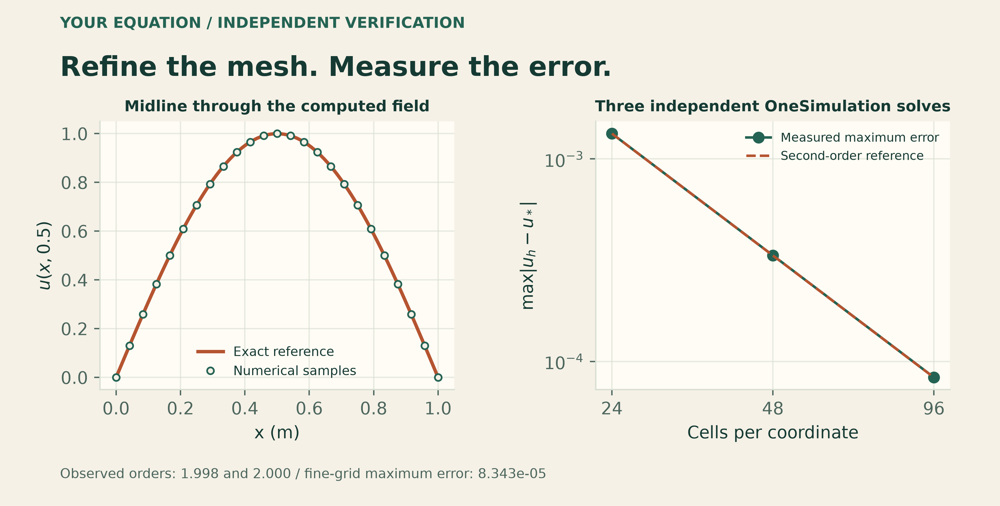
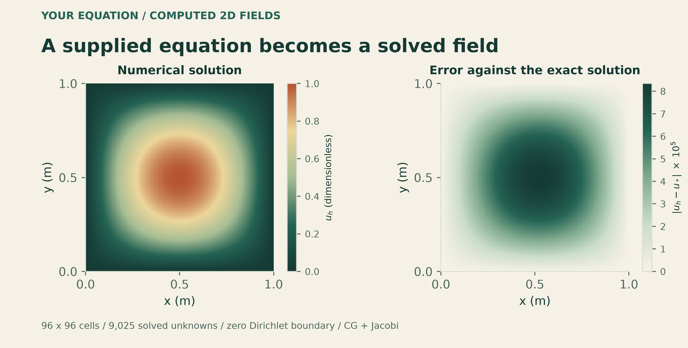

Docs › Guide
11 Define and solve your own equation
OneSimulation can execute an equation that you declare yourself. This chapter builds a stationary reaction–diffusion problem from its coefficients, source and boundary values, solves it on three meshes, and checks the computed field against an exact solution. The equation declaration and numerical configuration remain separate, so the same mathematical problem can be refined without rewriting its physical terms.
The complete example is supplied as Custom_Equation.ipynb and Custom_Equation.py beside the Showcase sources. The three code cells below reproduce the notebook: declaration, calculation and verification, then plotting. They use the equation interfaces exercised in the inspected source checkout on 11 November 2026. NumPy and Matplotlib are the only additional imports used by the recipe.
11.1 Start with a well-posed mathematical problem
Let \(u(x,y)\) be a dimensionless scalar on the square \(\Omega=[0,1]\times[0,1]\) m. Prescribe a spatially varying diffusion coefficient and a positive linear reaction coefficient:
The equation and boundary condition are
Diffusion varies continuously from \(1\) to \(2\ {\rm m^2/s}\) across the square. The reaction term removes the scalar at a rate proportional to its local value. The source is specified below so that the exact solution is known independently of the numerical solve.
This is a stationary boundary-value problem, so no physical initial condition or time step is supplied. A linear solver's initial iterate belongs to the algebraic calculation; it is not an initial state at a physical time.
| Quantity | Meaning | Unit |
|---|---|---|
| \(u\) | Dependent scalar field | \(1\) |
| \(x,y,L\) | Coordinates and reference length | m |
| \(D_0,D(x)\) | Diffusion coefficient | \(\mathrm{m^2/s}\) |
| \(\kappa\) | Linear reaction coefficient | \(\mathrm{s^{-1}}\) |
| \(f\) | Distributed source in the equation | \(\mathrm{s^{-1}}\) |
The diffusion, reaction and source terms all have units of \(\mathrm{s^{-1}}\). The unit strings in the declaration document those choices. Keep the numerical values and expressions consistent with the stated SI units; changing a unit string does not rescale a coefficient.
11.2 Derive a verification target and its forcing
Choose the exact field
For \(L=1\) m, it vanishes on all four edges of the specified square and has unit value at its centre. The forcing must include the derivative of the variable diffusion coefficient. The product rule gives
Here \(\nabla^2u_\star=-2\alpha^2u_\star\), \(\partial_xD=D_0/L\), and \(\partial_yD=0\). Substitution gives the source used in the notebook:
The second term is essential. Omitting it would solve a different equation even if the resulting plot looked smooth. This construction is a manufactured-solution test: define an exact field first, derive the forcing from the differential equation, and measure how the numerical solution approaches that field as the mesh is refined.
11.3 Declare the field, coefficients and boundary values
The first cell contains the complete mathematical declaration. EquationModel identifies the dependent variable, coordinate system and coefficient-form equation. Each EquationFormula assigns an expression and unit to a specific role. The role named absorption supplies the coefficient \(\kappa\) multiplying \(u\); it does not prescribe the field itself. The name unit_square is a domain identifier for this equation declaration.
import json
from pathlib import Path
from time import perf_counter
import numpy as np
from onesim.simulation.problem_definition.declarations.physics.models.contracts.models.custom_models import (
EquationFormula, EquationModel, EquationModelForm,
)
from onesim.simulation.problem_definition.declarations.physics.equations.equation_solver import (
solve_coefficient_form,
)
# Declare the mathematical problem explicitly; all quantities use SI units.
parameters = {"D0": 1.0, "L": 1.0, "kappa": 2.0} # m^2/s, m, 1/s
source = (
"(2*D0*(pi/L)**2*(1+x/L)+kappa)*sin(pi*x/L)*sin(pi*y/L)"
"-D0*pi/L**2*cos(pi*x/L)*sin(pi*y/L)"
)
equation = EquationModel(
equation_id="user.variable_diffusion", name="Your own reaction-diffusion equation",
form=EquationModelForm.COEFFICIENT_PDE, dependent_variables=("u",),
domain_ids=("unit_square",), dimension=2, coordinate_system="cartesian",
formulas=(
EquationFormula("diffusion", "D0*(1+x/L)", "m^2/s"),
EquationFormula("absorption", "kappa", "1/s"),
EquationFormula("source", source, "1/s"),
EquationFormula("dirichlet", "0", "1"),
),
)The two adjacent strings assigned to source are concatenated by Python. Their mathematical content is exactly the forcing derived above. The coefficient-form execution route evaluates the expressions using the supplied coordinate and parameter values. No predefined heat-transfer, electrostatics or species-transport model appears in this declaration.
11.4 Choose the discretization, solve and verify
The selected coefficient-form execution route assembles a conservative, second-order flux-difference discretization on a structured unit square. resolution=N means \(N\) intervals along each coordinate: \(N^2\) cells and \((N+1)^2\) reported nodal values. Homogeneous Dirichlet values are prescribed on the boundary, leaving \((N-1)^2\) interior unknowns in the linear solve.
The diffusion coefficient is positive and the reaction coefficient is nonnegative, giving a symmetric positive-definite interior system for this case. The cell below selects conjugate gradients with Jacobi preconditioning, relative tolerance \(10^{-10}\), absolute tolerance \(10^{-12}\), and at most 2,000 iterations. The provider and selected method are recorded in the returned solver report and numerical execution plan.
The second cell performs three independent solves. It extracts the computed values, evaluates the exact solution at the same nodes, calculates errors, checks refinement, and saves native arrays plus numerical metadata. The output directory is local to the notebook's working directory.
# The current coefficient-form helper assembles a structured unit square.
# Its mesh parameter counts cells per direction; boundaries are prescribed.
out = Path("custom_equation_results")
out.mkdir(parents=True, exist_ok=True)
records = []
for cells in (24, 48, 96):
started = perf_counter()
result = solve_coefficient_form(
equation, resolution=cells, parameter_values=parameters,
linear_method="cg", preconditioner="jacobi",
relative_tolerance=1e-10, absolute_tolerance=1e-12,
maximum_iterations=2000,
)
elapsed = perf_counter() - started
axis = np.asarray(result["coordinates"])
x, y = np.meshgrid(axis, axis, indexing="ij")
u = np.asarray(result["solution"])
exact = np.sin(np.pi*x/parameters["L"]) * np.sin(np.pi*y/parameters["L"])
error = u - exact
max_error = float(np.max(np.abs(error)))
relative_l2 = float(np.linalg.norm(error) / np.linalg.norm(exact))
order = None if not records else float(np.log2(records[-1]["max_error"] / max_error))
record = {
"cells_per_axis": cells, "cells": cells**2, "nodes": u.size,
"unknowns": result["unknowns"], "nonzeros": result["nonzeros"],
"max_error": max_error, "relative_l2_error": relative_l2,
"observed_max_error_order": order, "elapsed_seconds": elapsed,
"residual_norm": result["residual_norm"], "solver": result["solver"],
"numerical_plan": result["numerical_plan"],
}
assert np.isfinite(u).all() and u.shape == (cells+1, cells+1)
assert result["solver"]["relative_residual"] < 2e-10
assert order is None or 1.9 < order < 2.1
np.savez_compressed(out/f"reaction_diffusion_{cells}.npz", x=x, y=y, u=u,
exact=exact, error=error, axis=axis)
records.append(record)
print(f"{cells:2d} x {cells:2d} cells | {result['unknowns']:5d} unknowns | "
f"max error {max_error:.8e} | relative L2 {relative_l2:.8e}", flush=True)
metrics = {"equation": equation.to_dict(), "parameters_SI": parameters,
"exact_solution": "sin(pi*x/L)*sin(pi*y/L)",
"domain": "[0, 1] m x [0, 1] m", "runs": records}
(out/"metrics.json").write_text(json.dumps(metrics, indent=2)+"\n")
assert records[-1]["max_error"] < 1e-4
print(f"Verified second-order refinement. Results: {out}")The exact field is used only after each solve to calculate the verification error. The equation receives the derived source, coefficients and boundary condition. Saving u, exact and error separately makes that distinction inspectable in the resulting NPZ files.
The first assertion checks that the field is finite and has the expected nodal shape. The solver-report assertion checks convergence of the assembled algebraic equations. The observed-order assertion and final error threshold check the spatial approximation against the independent reference. These checks answer different questions and should remain separate in a notebook.
11.5 Read the measured refinement results
Define the maximum nodal error and relative discrete \(\ell^2\) error by
These sums use the reported nodes, including the prescribed boundary values. The second quantity is the discrete relative norm used in the code, rather than a separately integrated continuum error. Halving the uniform spacing gives the observed maximum-error order
The executed example produced the following results. Values are rounded for display; metrics.json retains the full recorded precision.
| Cells | Interior unknowns | \(E_\infty\) | \(E_{2,\mathrm{rel}}\) | Observed \(p\) |
|---|---|---|---|---|
| \(24\times24\) | 529 | \(1.333454\times10^{-3}\) | \(1.327800\times10^{-3}\) | — |
| \(48\times48\) | 2,209 | \(3.337633\times10^{-4}\) | \(3.317508\times10^{-4}\) | 1.99827 |
| \(96\times96\) | 9,025 | \(8.342833\times10^{-5}\) | \(8.292525\times10^{-5}\) | 2.00022 |
The finest calculation reports 9,409 nodal values, of which 384 are prescribed boundary values, and a sparse interior matrix with 44,745 nonzero entries. Conjugate gradients converged in 138 iterations with a reported relative residual of \(4.0647\times10^{-11}\). The maximum field error is about four times smaller after each mesh refinement, consistent with second-order spatial convergence for this smooth problem.


Measured errors from three separate coefficient-form solves. The reference slope describes second-order convergence; it is not a fitted replacement for the computed values.
A small algebraic residual does not make the spatial discretization exact. Here the residual is already much smaller than the error against \(u_\star\). Tightening the linear tolerance alone would not remove the leading mesh error. Conversely, a poorly converged linear solve can obscure a genuine mesh-convergence trend.
11.6 Plot the checked solution and its error
The third cell plots the final computed field and its signed difference from the reference, followed by the refinement curve. It uses the numerical arrays left by the finest solve and the recorded errors from all three resolutions. The two-dimensional spatial support is labelled explicitly; adding a perspective view would not turn this calculation into a three-dimensional volume problem.
import matplotlib.pyplot as plt
from matplotlib.colors import LinearSegmentedColormap
cream, forest, copper = "#f4f1e8", "#173f37", "#b75b36"
cmap = LinearSegmentedColormap.from_list("OneSimulation", [forest, "#90b39a", "#e4d5a0", copper])
plt.rcParams.update({"font.family": "DejaVu Sans", "text.color": forest,
"axes.labelcolor": forest, "xtick.color": forest,
"ytick.color": forest, "axes.edgecolor": forest})
fig, axes = plt.subplots(1, 3, figsize=(13.5, 4.2), constrained_layout=True)
fig.patch.set_facecolor(cream)
for ax in axes:
ax.set_facecolor(cream)
for ax, values, title in zip(axes[:2], (u, error), ("Your computed field", "Error against the exact solution")):
image = ax.pcolormesh(x, y, values, shading="auto", cmap=cmap)
ax.set(title=title, xlabel="x [m]", ylabel="y [m]", aspect="equal")
fig.colorbar(image, ax=ax, shrink=0.75, label="u [1]" if ax is axes[0] else "u - exact [1]")
h = np.array([1/r["cells_per_axis"] for r in records])
e = np.array([r["max_error"] for r in records])
axes[2].loglog(h, e, "o-", color=copper, label="Measured maximum error")
axes[2].loglog(h, e[-1]*(h/h[-1])**2, "--", color=forest, label="Second-order reference")
axes[2].set(title="Verified mesh refinement", xlabel="Cell width h [m]", ylabel="Maximum absolute error [1]")
axes[2].legend(fontsize=8)
fig.suptitle("OneSimulation / Your own equation", fontsize=17, fontweight="bold")
fig.savefig(out/"custom_equation.png", dpi=220, facecolor=cream)
fig.savefig(out/"custom_equation.svg", facecolor=cream)
plt.show()

The computed scalar field and its error on the \(96\times96\) grid. The source includes both the Laplacian contribution and the gradient of the spatially varying diffusion coefficient.
The notebook exports a PNG and an editable SVG beside its numerical results. Keep the NPZ files and metrics.json with the figure so another reader can reproduce the error definitions and identify the actual solver mesh. Increasing the image resolution changes presentation only; changing resolution triggers a new numerical solve.
11.7 Adapt the example within its execution contract
To make a new case, edit the coefficient expressions, parameter values, source and boundary value in the first cell, then repeat the verification workflow. Retain a simple exact solution or a known limiting case while changing the physics. Once an independent reference is unavailable, use suitable balance checks and mesh refinement of the quantities you intend to report.
The executed route has specific limits. It solves one stationary scalar coefficient-form diffusion–reaction equation on a structured one- or two-dimensional Cartesian domain. This two-dimensional helper uses a unit square with a prescribed Dirichlet value on its boundary. In the inspected implementation, the two-dimensional resolution limit is 96 intervals per direction. The parameter L in this example appears in the coefficient and reference expressions; changing its value does not resize the helper's domain. The value \(L=1\) m is therefore part of the manufactured reference used here.
This recipe exercises spatially variable scalar diffusion and a linear reaction term. It does not establish a general three-dimensional custom-PDE route, an arbitrary CAD-domain solve, or an arbitrary nonlinear constitutive law. Other equation forms and numerical routes have their own supported fields, dimensions, boundary conditions and integration contracts. Check the selected execution path rather than inferring support from the ability to store an equation declaration.
The measured convergence establishes numerical consistency for this manufactured problem. It does not validate a particular material, device or experiment. The useful result is a complete workflow you can inspect and modify: state your equation, derive a checkable reference, choose numerics, execute the model, and measure what changes under refinement.